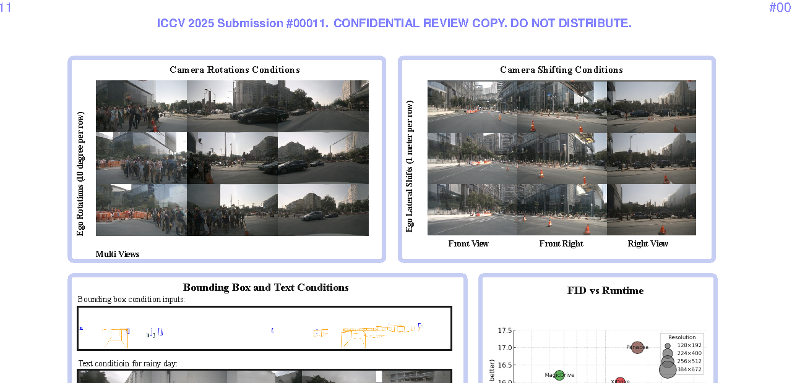
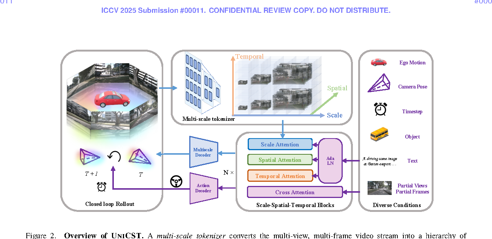
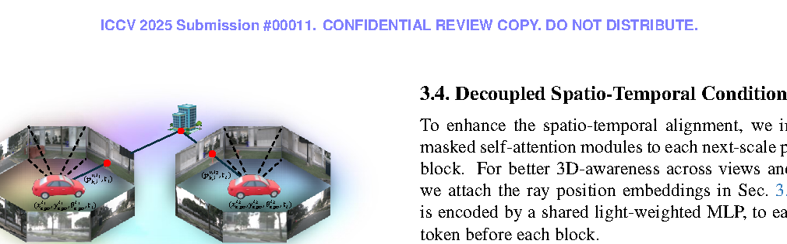
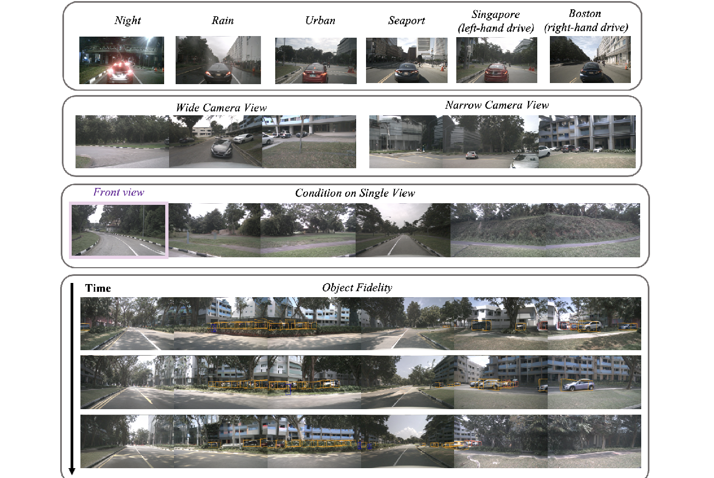

一句话总结
UNICST 的核心贡献是把驾驶世界视频表示成 scale、spatial/view、temporal 三类依赖解耦的连续 4D latent hierarchy， 用 next-scale autoregressive prediction 在较高速度下生成多视角、多帧、几何一致的视频。
论文要解决的问题
自动驾驶世界模型需要同时满足视觉真实、多视角一致、时间连续、可控生成和快速推理。 现有 diffusion 视频模型质量不错但推理慢；显式 3D 条件方法依赖 HD map、3D box、depth、occupancy 或 LiDAR，预处理和标注成本高； 直接把视频 token 拉平成序列的 autoregressive 方法又会破坏空间结构并带来巨大复杂度。

创新点怎么理解
Next-scale 多视角视频生成
不按 token 逐个生成，而按分辨率尺度从粗到细生成。每个尺度内 token 可并行，速度比 diffusion 更适合交互式世界模拟。
统一连续 4D world space
用 Plücker ray embedding、camera pose、ego motion 和 time，把不同视角与时间的 token 放入同一个 3D+time 坐标系。
Scale-Spatial-Temporal 解耦
scale attention 负责粗到细，spatial attention 负责跨视角一致，temporal attention 负责历史连续性，避免全 attention 的高成本。
灵活条件输入
文本、object boxes、partial views、partial frames、camera pose 和 ego motion 都可作为条件注入，减少固定传感器拓扑假设。
这里的“尺度”到底是什么
UNICST 里的 scale 不是多个视角，也不是未来帧，而是同一张图像或视频帧在 latent token 空间里的不同分辨率层级。 可以理解成从全局粗结构到局部细节的 coarse-to-fine hierarchy。
scale 1: 低分辨率 token map，负责全局布局
scale 2: 中等分辨率 token map，补充结构
...
scale K: 高分辨率 token map，补充视觉细节| 维度 | 在 UNICST 中的含义 | 回答的问题 |
|---|---|---|
| Scale | 同一图像的多分辨率 latent token 层级 | 这张图生成到多细 |
| Spatial / View | 同一时间下的不同相机视角 | 这是哪个相机，跨视角是否一致 |
| Temporal | 不同历史或未来时间帧 | 这是哪一帧，时间上是否连续 |
方法总览

multi-view multi-frame video
↓
multi-scale tokenizer
↓
scale-spatial-temporal tokens
↓
SST blocks
↓
next-scale latent prediction
↓
multi-scale decoder
↓
generated multi-view video单图 next-scale likelihood：
p(R_1, R_2, ..., R_K) = Π_k p(R_k | R_1, R_2, ..., R_{k-1})扩展到多视角多帧后，论文进一步把依赖解耦成：
p(R_{v0,t0}^{1:K}) =
Π_k p(R_{v0,t0}^k | R_{v0,t0}^{1:k-1}, R_{v≠v0,t0}^k, R_{v0,1:t0-1}^k)统一 4D Ray 表示

每个 image token 不再只是二维 patch index，而是通过相机内外参对应到 3D 空间中的一条射线，并附加时间维度。 这样不同相机或不同时间看到同一个物理点时，模型更容易在 latent space 中建立对应关系。
p_{k,j}^{cam} = (u_j * d_j * s_k^w, v_j * d_j * s_k^h, d_j, 1)
p_{k,j}^{v,0} = K_v^{-1} p_{k,j}^{cam}
p_{k,j}^{v,t} = T_{v,t} p_{k,j}^{v,0}
position embedding = (p_{k,j}^{v,t}, t)Scale-Spatial-Temporal Blocks
论文没有让所有 token 做全 attention，而是拆成 scale、spatial、temporal 三条依赖。
scale reliance:
R_{v0,t0}^{1:k-1}
同一图像低尺度生成高尺度
spatial reliance:
R_{v≠v0,t0}^k
同一时间同一尺度下看其他相机视角
temporal reliance:
R_{v0,1:t0-1}^k
同一视角同一尺度下看历史帧Spatial condition：
R_{k,out}^{v,t} = R_{k,in}^{v,t} + Masked-SA(R_{k,in}^{v,t}, R_{k,in}^{1:V,t})Temporal condition：
R_{k,out}^{v,t} = R_{k,in}^{v,t} + Masked-SA(R_{k,in}^{v,t}, R_{k,in}^{v,1:t-1})Action Token 与 Motion Planning
UNICST 也加入了 action token：在每一帧最高尺度后加入一个 learnable action token， 让它看当前最高尺度视觉 tokens 和历史 action tokens，最后用 classification head 预测未来 ego trajectory cluster。
r_{act,out}^t = r_{act,in}^t + Masked-SA(r_{act,in}^t, R_{K,in}^{1:V,t})
r_{act,out}^t = r_{act,in}^t + Masked-SA(r_{act,in}^t, r_{act,in}^{1:t-1})不过这篇的核心实验仍是 FID/FVD/FPS 生成质量与效率，不是闭环规划 SOTA。
实验结果
训练数据来自 nuScenes 与 nuPlan，按 ScenarioNet 切成 20 秒序列；总训练约 59.5 小时，验证为 nuScenes 0.8 小时。 3B 模型先在 192×336 训练，再在 384×672 high resolution finetune。

消融实验
| 消融项 | 设置 | FID | FVD | 结论 |
|---|---|---|---|---|
| View embedding | None / Learnable / Ray | 24.7 / 23.4 / 21.7 | 280.5 / 248.8 / 240.8 | Ray embedding 最好，说明真实几何坐标比相机 ID 更有效 |
| Time embedding | None / Learnable / Continuous | 23.2 / 25.1 / 21.7 | 257.7 / 261.3 / 240.8 | 连续时间表示更适合不同帧率和随机时间间隔 |
| Spatial / Temporal | T only / S only / S+T | 26.0 / 21.9 / 21.7 | 247.8 / 270.3 / 240.8 | spatial 主要保多视角质量，temporal 主要保视频连贯 |
局限与疑问
- 主要证明生成：虽然有 action token，但核心证据是 FID/FVD/FPS，不是闭环规划指标。
- FID/FVD 不等于物理正确：它们不能充分证明交通规则、交互因果和碰撞风险合理。
- 训练成本仍高：3B 模型、64 A100、高分辨率 finetune，训练不算轻量。
- minimal inductive bias 有包装成分：Plücker ray、camera pose、ego motion 本身就是几何先验；更准确说是减少固定传感器拓扑偏置。
- 匿名投稿版本：PDF 标注 ICCV 2025 confidential review copy，引用时应核查公开版本。
值得带走的启发
UNICST 的价值在于给 driving world generation 提供了一个可扩展 backbone： 多视角一致性来自连续 4D ray space，时序一致性来自 causal temporal condition，速度来自 next-scale coarse-to-fine latent prediction。 如果后续把这种生成 backbone 和规划策略更强地闭环耦合，才更接近真正的 world model for control。